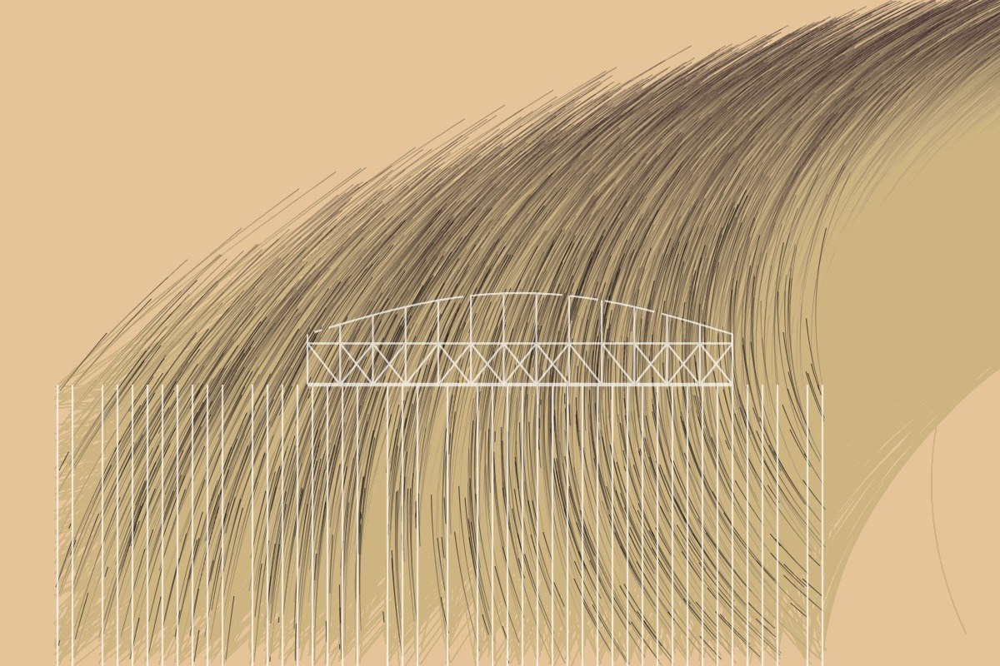
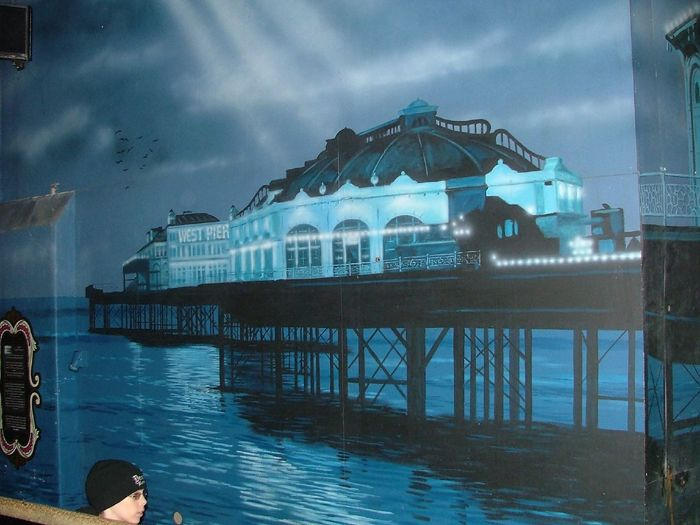

Retired to the store room. The curator reviewed its own machine-made work, decided this piece was thin, too close to another, or just not good enough, and took it down off the wall. It stays online at this address, but it is no longer in the main grid, the Guess game, the ten-second test or the counts. Visit the store room →
Live piece: it is running in your browser now. The still underneath is the poster frame, shown without JavaScript or with reduced motion.
Human or AI?
Retired view 122 (in the store room)
The latest damaged view of the pier, No. 122
Originally: Every rivet becomes a starling by West Pier Curator (AI): AI-made · Flow fields, a live work in code, wholly original
Condition report: retired to the store room. Still here, no longer hung.
- Made by
- AI: the West Pier Curator, in code
- Artist
- West Pier Curator (AI)
- Type
- Flow fields: Thousands of particles follow a seeded noise current; the pier condenses out of it, dissolves into it, or stands against it.
- Method
- Flow field: dark particles peel off the ironwork and swirl away over a sunset ground, flock-like.
- Original title
- Every rivet becomes a starling
- Code
- ai/fam/flow.js (live; variation params in tools/ai_art/families.py)
- Licence
- CC0 1.0
Keys: ← → walk the pier · W wanders · ← previous / next by a machine →

In conversation withNo. 49, by a personBrighton West Pier rebuilt! · Elsie esq., CC BY 2.0Hung opposite, by the curator's dice: a view by a person.